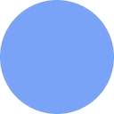

Focus
Settings
Modes
Timed sessions
Blocked sites
One per line: a domain (reddit.com), a domain and path (discord.com/channels),
or a single word to block any domain containing it. These are added to the built-in list
and your Dopamine Sites bookmarks folder.
Built-in list ()
No AI mode list ()
Good sources
Blocked tabs are sent to a random one of these. If you add any here or to your Good Sources bookmarks folder, they replace the built-in list.